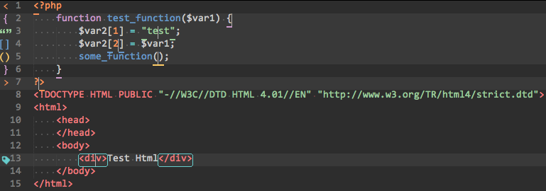
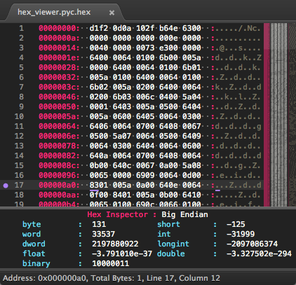

sublimeText 3 配置¶
文档¶
https://www.sublimetext.com/docs/3/ http://docs.sublimetext.info/en/latest/index.html https://sublime-undocs-zh.readthedocs.io/en/latest/index.html http://sweetme.at/2013/08/08/sublime-text-keyboard-shortcuts/
Package Control使用¶
安装Package Control¶
ctrl+~打开导入框
sublimeText3:
import urllib.request,os; pf = 'Package Control.sublime-package'; ipp = sublime.installed_packages_path(); urllib.request.install_opener( urllib.request.build_opener( urllib.request.ProxyHandler()) ); open(os.path.join(ipp, pf), 'wb').write(urllib.request.urlopen( 'http://sublime.wbond.net/' + pf.replace(' ','%20')).read())用Package Control安装插件的方法：¶
- 按下
Ctrl+Shift+P调出命令面板,输入install调出Install Package选项并回车,然后在列表中选中要安装的插件。 - 插件列表:https://packagecontrol.io
其它功能¶
Add Repository: 从指定git上安装插件，需给出一个git库目录,如https://github.com/username/repoRemove Package: 移除插件,安装的插件列表记录在:Packages/User/Package Control.sublime-settings,我的本地目录是:Sublime Text Build 3114 x64\Data\Packages\UserEnable Package: 启用插件Disable Package: 禁用插件Discover Packages: 打开web站查找Upgrade/Overwrite All Packages: 升级并覆盖所有package，包括不是通过package control安装的Upgrade Package: 列出可供升级的package
Data目录¶
====================
Windows: :file:%APPDATA%\\Sublime Text 3
OS X: :file:~/Library/Application Support/Sublime Text 3
* Linux: :file:~/.config/sublime-text-3
配置¶
字体¶
Preferences->File Setting-User，打开配置文件，看里面有没font_face配置项，有就直接改，没有就自己加上，可能的配置文件如下：
{
"color_scheme": "Packages/Color Scheme - Default/Black-Pearl2.tmTheme",
"font_face": "微软雅黑", "font_size": 10.0
}配色:¶
技巧¶
怎样把字符替换成换行¶
打开正则匹配模式输入: \n每行的代码都被用框框住¶
在Anaconda设置里找到pep8把true改为false
jump-to-previous-cursor-position-shortcut¶
to jump back: Alt + -
to jump forward: Alt + Shift + -
or through Goto menu.
(SublimeText 3, build 3114)Open the console and type¶
sublime.log_commands(True)
sublime.log_input(True)缩进设置¶
http://feliving.github.io/Sublime-Text-3-Documentation/indentation.html
快捷键¶
Win¶
- ctrl+` 命令导入
ctrl+shift+p常用命令ctrl+p文件切换ctrl +r查看类的方法Ctrl+L选择整行（按住-继续选择下行）Ctrl+KK从光标处删除至行尾Ctrl+Shift+K删除整行Ctrl+Shift+D复制光标所在整行，插入在该行之前Ctrl+J合并行（已选择需要合并的多行时）Ctrl+KU改为大写Ctrl+KL改为小写Ctrl+D选词 （按住-继续选择下个相同的字符串）Ctrl+M光标移动至括号内开始或结束的位置Ctrl+Shift+M选择括号内的内容（按住-继续选择父括号）Ctrl+/注释整行（如已选择内容，同“Ctrl+Shift+/”效果）Ctrl+Shift+/注释已选择内容Ctrl+Space自动完成（win与系统快捷键冲突，需修改）Ctrl+Z撤销Ctrl+Y恢复撤销Ctrl+Shift+V粘贴并自动缩进（其它兄弟写的，实测win系统自动缩进无效）Ctrl+M光标跳至对应的括号Alt+.闭合当前标签Ctrl+Shift+A选择光标位置父标签对儿Ctrl+Shift+[折叠代码Ctrl+Shift+]展开代码Ctrl+KT折叠属性Ctrl+K0展开所有Ctrl+U软撤销Ctrl+T词互换Shift+Tab去除缩进Ctrl+Shift+UP与上行互换Ctrl+Shift+DOWN与下行互换Ctrl+K Backspace从光标处删除至行首Ctrl+Enter插入行后Ctrl+Shift Enter插入行前F9行排序（按a-z）ALT+SHIFT+2分屏- Ctrl + Home -> to the beginning of the file
- Ctrl + End -> to the end of the fil
光标移动到首尾设置¶
{ "keys": ["ctrl+k", "ctrl+h"], "command": "move_to", "args": {"to": "bol", "extend": false} },
{ "keys": ["ctrl+k", "ctrl+e"], "command": "move_to", "args": {"to": "eol", "extend": false} }光标移动到文件头尾¶
ctrl+home :文件头
ctrl+ end :文件尾光标移动¶
ctrl+enter #另起一行
ctrl+箭头上 #锁定当前行向上移动
ctrl+ -> #光标移单词cacel build¶
{ "keys": ["ctrl+shift+c"], "command": "exec", "args": {"kill": true} }Mac¶
⌘⇧P命令提示⌃G前往行⌘K/B开关侧栏⌘L选择行 (重复按下将下一行加入选择)⌃⇧K删除行⌘⇧D复制(多)行⌘KU改为大写⌘KL改为小写⌘ /注释⌘⌥ /块注释⌃M跳转至对应的括号 +⌘F查找⌘⌥F替换⌘⌥G查找下一个符合当前所选的内容⌘⌃G查找所有符合当前所选的内容进行多重编辑⌘⇧F在所有打开的文件中进行查找⌘⌥2双列拆分窗口⌃[1,2,3,4]焦点移动至相应组⌃⇧[1,2,3,4]将当前文件移动至相应组
常用插件:¶
auto-save¶
可以自动保存输入内容的插件,我的配置如下,修改5秒后无操作则自动保存:
{
"auto_save_on_modified": true,
"auto_save_delay_in_seconds": 5,
}ChineseTranslator¶
翻译插件,选中中文翻译成英文,英文翻译成中文
快捷键¶
- 选中翻译: ctrl+shift+c
- 重新绑定:
//translate
{
"keys": ["ctrl+shift+t"],
"command": "translate"
},BracketHighlighter¶
标签匹配 
Colorsublime¶
配置管理器 + Colorsublime:Browser Theme :打开colorsublime网站浏览 + Colorsublime:Install Theme : 安装配色方案
ConvertToUTF8¶
不解释,转换编码:“File > Set File Encoding to
Emmet¶
前端码字神器
FavoriteFiles¶
sublime书签增强版,原理就是把要关注的文件分组保存到一个json文件中
+ FavoriteFiles:add file(s) : 添加到组里
+ FavoriteFiles:open file: 打开书签中文件
+ FavoriteFiles:remove file(s) : 移除文件
FileDiffs¶
比较文件,平时单文件用这个,目录较多时用beyond compare
file_diff_menu: 显示比较菜单项,默认快捷键:ctrl+shift+d.
file_diff_clipboard:与剪贴板中的内容比较
file_diff_selections: 与选中内容比较
file_diff_tab: 与标签页中文件比较
file_diff_previous: 当前文件与上次激活的文件比较
FileHeader¶
github:https://github.com/shiyanhui/FileHeader
FileHeader是一个为文件添加文件头和body的插件,fileHander采用了Jinja2的模板,理论上支持所有语言.默认的模板在FileHeader-->template中,设计分为header和body两个文件夹,header和定义一般如下:
# -*- coding: utf-8 -*-
# @Author: {{author}}
# @Date: {{create_time}}
# @Last Modified by: {{last_modified_by}}
# @Last Modified time: {{last_modified_time}}自定义模板¶
要自定义模板可以在设置中设置 custom_template_header_path和custom_template_body_path路径,不要直接修改FileHeader-->template中的模板.
快捷键¶
- 新文件: OS X:
super+alt+n,Windows , Linux :ctrl+alt+n - 旧文件: OS X:
super+alt+a,Windows , Linux :ctrl+alt+a
FindKeyConflicts¶
查找sublime快捷键冲突的插件:
使用¶
ctrl+shift+p 调出命令面板,选择FindKeyConflicts: All Key Maps to Quick Panel ,输入要查找的冲突键,比如:ctrl+shift+c回车,输出结果如下:
-------------
Entry Details
-------------
[ctrl+shift+c]
translate ChineseTranslator
convert_to_utf8 ConvertToUTF8
copy_path Path Tools
git_commit_amend SublimeGit [{"operand": "text.git-status", "key": "selector", "operator": "equal"}]
repl_clear SublimeREPL [{"operand": true, "key": "setting.repl", "operator": "equal"}]
copy_path UserGist¶
代码片段管理
+ Create Public Gist :创建公共片段
+ Create Private Gist :创建私有片段
+ Update File :更新片段
+ Open Gist :打开代码片段
+ Insert Gist :插入片段
+ Add File :添加文件
HexViewer¶
hex查看编辑工具

- Hex Viewer: Toggle Hex View 打开hex界面
- Hex Viewer: Show Hex Inspector 静态分析
- Hex Viewer: Go to Offset 跳转到偏移点
- Hex Viewer: Show Hex Edit Panel 显示编辑面板
- Hex Viewer: Discard All Edits 放弃所有编辑
- Hex Viewer: Export Bin 导出二进制文件
- Hex Viewer: Get Checksum 校验算法,有md5等
- Hex Viewer: Generate Hash 算hash值
HTML-CSS-JS Prettify¶
代码格式化插件,需要nodejs支持
快捷键:Cmd+Shift+H
IMESupport¶
校正输入法位置
JsFormat¶
js代码格式化
MarkdownEditing¶
sublime下markdown编辑
OmniMarkupPreviewer¶
sublime下markdown预览工具
https://github.com/timonwong/OmniMarkupPreviewer
http://macplay.leanote.com/post/%E8%BF%91%E4%B9%8E%E5%AE%8C%E7%BE%8E%E7%9A%84-Markdown-%E5%86%99%E4%BD%9C%E4%BD%93%E9%AA%8C-Sublime-Text-3-OmniMarkupPreviewer
Material Theme¶
一直在用的主题
OmniMarkupPreviewer¶
sublime下markdown预览插件
Open Folder¶
侧边栏打开文件夹
Open URL¶
选中网址在浏览器中打开
Path Tools¶
路径拷贝插入工具
+ Insert File Path 插入路径 E:\git\hexo\source\_posts\ sublimeText 2,3 配置.md
+Insert File Directory 插入目录E:\git\hexo\source\_posts
+Insert File Name 插入文件名 sublimeText 2,3 配置.md
+ Insert Path Relative to Project 插入相对路径\hexo\source\_posts\ sublimeText 2,3 配置.md
+ Insert Directory Relative to Project 插入相对目录\hexo\source\_posts
+ Copy File Path 复制文件路径
+ Copy File Directory 复制文件目录
+ Copy File Name 复制文件名
Path Translator¶
win,linux风格路径互转 /, \
SideBarFolders¶
文件夹快速切换
SideBarGit¶
sidebar git管理
SublimeGit¶
git管理
SublimeAStyleFormatter¶
c++/java代码格式化
Terminal¶
打开终端
TortoiseSVN¶
svn管理
TrailingSpaces¶
去除空格
View In Browser¶
在浏览器中打开
DoxyDoxygen¶
注释生成工具
授权¶
破解版:¶
- https://sublimecrack.wordpress.com/2015/06/07/sublime_text3_crack/
- http://haojian138.blog.163.com/blog/static/212643110201393010438357//
破解分析:¶
注册码¶
github搜索EA7E Single User License
测试版本: 3117
—– BEGIN LICENSE —–
Michael Barnes
Single User License
EA7E-821385
8A353C41 872A0D5C DF9B2950 AFF6F667
C458EA6D 8EA3C286 98D1D650 131A97AB
AA919AEC EF20E143 B361B1E7 4C8B7F04
B085E65E 2F5F5360 8489D422 FB8FC1AA
93F6323C FD7F7544 3F39C318 D95E6480
FCCC7561 8A4A1741 68FA4223 ADCEDE07
200C25BE DBBC4855 C4CFB774 C5EC138C
0FEC1CEF D9DCECEC D3A5DAD1 01316C36
—— END LICENSE ——
—– BEGIN LICENSE —–
Nicolas Hennion
Single User License
EA7E-866075
8A01AA83 1D668D24 4484AEBC 3B04512C
827B0DE5 69E9B07A A39ACCC0 F95F5410
729D5639 4C37CECB B2522FB3 8D37FDC1
72899363 BBA441AC A5F47F08 6CD3B3FE
CEFB3783 B2E1BA96 71AAF7B4 AFB61B1D
0CC513E7 52FF2333 9F726D2C CDE53B4A
810C0D4F E1F419A3 CDA0832B 8440565A
35BF00F6 4CA9F869 ED10E245 469C233E
—— END LICENSE ——
—– BEGIN LICENSE —–
Anthony Sansone
Single User License
EA7E-878563
28B9A648 42B99D8A F2E3E9E0 16DE076E
E218B3DC F3606379 C33C1526 E8B58964
B2CB3F63 BDF901BE D31424D2 082891B5
F7058694 55FA46D8 EFC11878 0868F093
B17CAFE7 63A78881 86B78E38 0F146238
BAE22DBB D4EC71A1 0EC2E701 C7F9C648
5CF29CA3 1CB14285 19A46991 E9A98676
14FD4777 2D8A0AB6 A444EE0D CA009B54
—— END LICENSE ——
—– BEGIN LICENSE —–
Alexey Plutalov
Single User License
EA7E-860776
3DC19CC1 134CDF23 504DC871 2DE5CE55
585DC8A6 253BB0D9 637C87A2 D8D0BA85
AAE574AD BA7D6DA9 2B9773F2 324C5DEF
17830A4E FBCF9D1D 182406E9 F883EA87
E585BBA1 2538C270 E2E857C2 194283CA
7234FF9E D0392F93 1D16E021 F1914917
63909E12 203C0169 3F08FFC8 86D06EA8
73DDAEF0 AC559F30 A6A67947 B60104C6
—— END LICENSE ——
----- BEGIN LICENSE -----
Free Communities Consultoria em Informática Ltda
Single User License
EA7E-801302
C154C122 4EFA4415 F1AAEBCC 315F3A7D
2580735A 7955AA57 850ABD88 72A1DDD8
8D2CE060 CF980C29 890D74F2 53131895
281E324E 98EA1FEF 7FF69A12 17CA7784
490862AF 833E133D FD22141D D8C89B94
4C10A4D2 24693D70 AE37C18F 72EF0BE5
1ED60704 651BC71F 16CA1B77 496A0B19
463EDFF9 6BEB1861 CA5BAD96 89D0118E
------ END LICENSE ------
----- BEGIN LICENSE -----
Peter Halliday
Single User License
EA7E-855988
3997BFF0 2856413A 7A555954 67069B78
06D8CE12 63EAF079 AD039757 79E16D13
C555AD90 465CBE53 10F6DFC4 D3A3C611
411106F8 0CFEB15F 0A7BB891 111F5ED2
C6AA8429 77913528 FA6291A9 B88D4550
F1D6AB13 BF9153BC 91B4DFFE D296CFE0
C1D8EB22 13D5F14E 75A699EC 49EDDC23
D89D0F9B D240B10A A3712467 09DE7870
------ END LICENSE ------
----- BEGIN LICENSE -----
Fred Zirdung
Single User License
EA7E-844672
6089C0EC 22936E1A 1EADEBE2 B8654BBA
5C98FFA6 C0FD1599 0364779B 071C74FB
EEFE9EAB 92B3D867 CD1B32FE D190269F
6FC08F8F 8D24191D 32828465 942CE58E
AECE5307 08B62229 D788560A 6E0AAC4B
48A2D9EE 24FD8CAA 07BEBDF2 28EA86D4
CCB96084 6C34CAD2 E8A04F39 3B5A3CBC
3B668BB7 C94D0B4B 847D6D7F 4BC07375
------ END LICENSE ------
----- BEGIN LICENSE -----
Wixel
Single User License
EA7E-848235
103D2969 8700C7ED 8173CF61 537000C0
EB3C7ECB 5E750F17 6B42B67C A190090B
7669164F C6F371A8 5A1D88D5 BDD0DA70
C065892B 7CC1BB2B 1C8B8C7C F08E7789
7C2A5241 35F86328 4C8F70D9 C023D7C2
11245C36 59A730DB 72BDB9A7 D5B20304
90E90E72 9F08CA25 73F49C20 179D938E
5BC8BEDA 13457A69 39E6265F 233767F9
------ END LICENSE ------
----- BEGIN LICENSE -----
Daniel Russel
Single User License
EA7E-917420
9327EC62 44020C2A 45172A68 12FE13F1
1D22245B 680892EE F551F8EB C183D032
8B4EDB4B 479CB7E4 07E42EDD A780021D
56BADF42 AC05238B 023B47B1 EBA1B7DE
6DF9A383 159F32AE 04EBE100 1278B1D2
52E81B60 C68AA2E8 F84A20BE FE7990EB
5D44E4B6 16369263 1DDAACBC 280FF19E
86CF4319 0B8615A8 4FF0512E B123B8EC
------ END LICENSE ------
----- BEGIN LICENSE -----
Peter Eriksson
Single User License
EA7E-890068
8E107C71 3100D6FC 2AC805BF 9E627C77
72E710D7 43392469 D06A2F5B F9304FBD
F5AB4DB2 7A95F172 FE68E300 42745819
E94AB2DF C1893094 ECABADC8 71FEE764
20224821 3EABF931 745AF882 87AD0A4B
33C6E377 0210D712 CD2B1178 82601542
C7FD8098 F45D2824 BC7DFB38 F1EBD38A
D7A3AFE0 96F938EA 2D90BD72 9E34CDF0
------ END LICENSE ------
----- BEGIN LICENSE -----
Ryan Clark
Single User License
EA7E-812479
2158A7DE B690A7A3 8EC04710 006A5EEB
34E77CA3 9C82C81F 0DB6371B 79704E6F
93F36655 B031503A 03257CCC 01B20F60
D304FA8D B1B4F0AF 8A76C7BA 0FA94D55
56D46BCE 5237A341 CD837F30 4D60772D
349B1179 A996F826 90CDB73C 24D41245
FD032C30 AD5E7241 4EAA66ED 167D91FB
55896B16 EA125C81 F550AF6B A6820916
------ END LICENSE ------